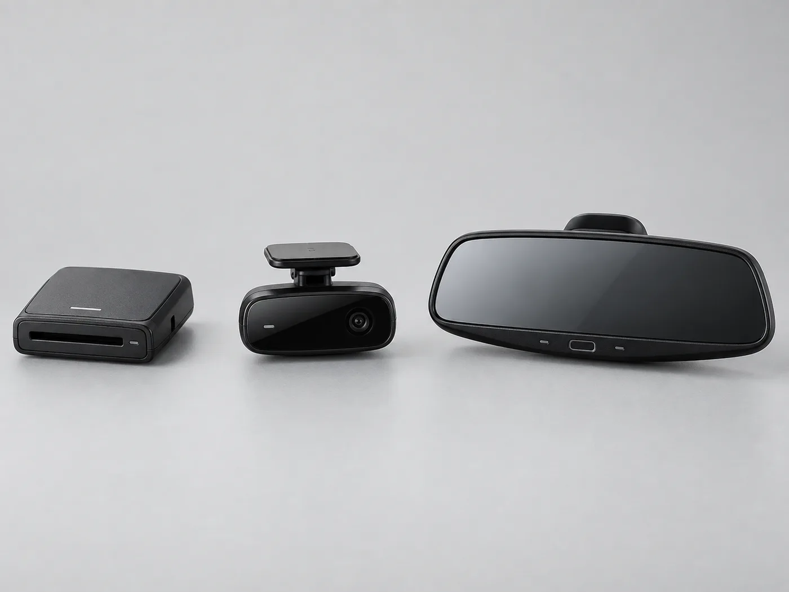
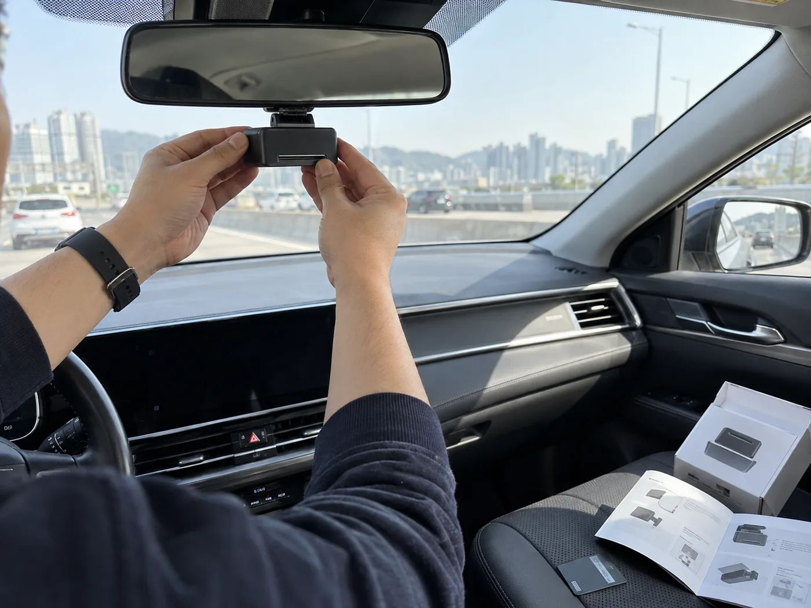
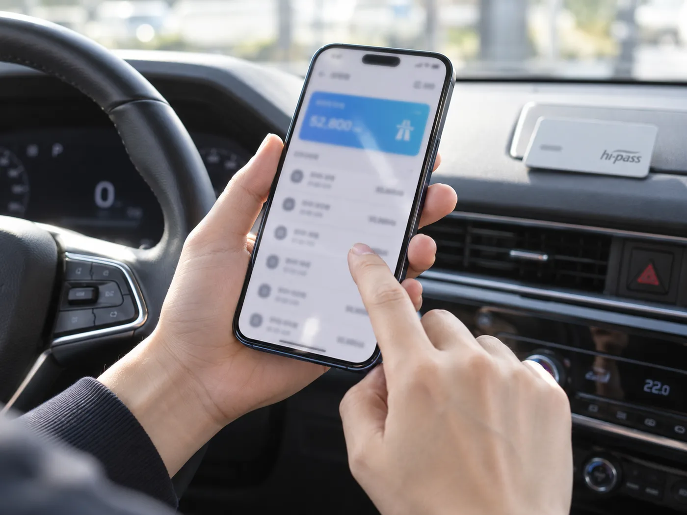

▲ 5년 이상 사용한 하이패스 단말기는 고장이 나지 않아도 배터리와 인식률이 서서히 떨어진다 ⓒ CarPrism (AI 생성 이미지)
하이패스 단말기가 지금 당장 '삑' 소리를 내며 멈춘 건 아니다. 통행료도 잘 빠져나가고, 톨게이트도 무리 없이 통과한다. 그런데도 정비 관련 커뮤니티나 제조사 안내를 보면 "5년 넘었으면 슬슬 바꿀 때"라는 말이 꾸준히 나온다. 왜 멀쩡해 보이는 단말기를 미리 바꾸라는 걸까.
답은 단말기 내부 배터리와 인식 회로가 눈에 보이지 않게 서서히 열화되기 때문이다. 완전히 죽기 전까지는 '가끔 삑삑거리는 정도'로만 느껴지다가, 어느 순간 통행료 미인식이 반복되기 시작한다. 이 글은 이미 고장 난 단말기의 증상별 대처법이 아니라, 아직 고장은 아니지만 교체 시점을 판단하는 기준과 실제 교체 방법에 초점을 맞춘다.
1. 하이패스 단말기의 수명은 몇 년일까
하이패스 단말기는 크게 두 부분의 노후화가 함께 진행된다. 하나는 통행료 결제를 위한 무선통신·인식 회로이고, 다른 하나는 회로에 전원을 공급하는 배터리다. 둘 중 하나만 문제가 생겨도 인식 오류나 오작동으로 이어질 수 있다.
| 구분 | 기준 |
|---|---|
| 단말기 평균 수명 | 통상 5~7년 — 이후 인식률·통신 안정성 저하 가능성 증가 |
| 건전지 교체형 배터리 | 2~3년마다 건전지 자체 교체 필요 |
| 내장형 배터리 | 제조사도 2년 이내 점검을 권장, 통상 3~5년 지나면 성능 저하 뚜렷 |
| 5년 이상 사용 단말기 | 하이패스 카드 자체엔 문제가 없어도 단말기 배터리·인식률 저하로 오류가 발생할 수 있음 |
📍 "가끔 삑삑거림"은 이미 신호다
매번 실패하는 게 아니라 열 번에 한두 번씩 인식이 늦거나 소리가 이상하게 울리는 정도라면, 대부분 운전자는 "어쩌다 그런가 보다" 하고 넘긴다. 하지만 이런 간헐적 증상이 5년 이상 쓴 단말기에서 나타난다면, 카드 재삽입이나 위치 조정으로 잠깐 나아져도 결국 배터리·회로 노후화로 재발할 가능성이 높다. 완전히 멈추기를 기다리기보다 이 시점에 교체를 검토하는 것이 합리적이다.
2. 단말기 종류별 특징과 가격대 — 뭘 사야 할까
교체를 결정했다면, 다음은 어떤 종류를 살지 정할 차례다. 하이패스 단말기는 형태에 따라 크게 세 가지로 나뉘고, 가격 차이가 상당히 크다.

▲ 왼쪽부터 카드 삽입형, 영상판독형(무카드형), 룸미러 일체형 — 가격과 설치 난도가 크게 다르다 ⓒ CarPrism (AI 생성 이미지)
| 종류 | 특징 | 대략적인 가격대 |
|---|---|---|
| 카드 삽입형(거치형) | 가장 보편적, 대시보드·룸미러 부근에 거치. 하이패스카드를 매번 꽂아 사용 | 약 1만~5만 원대 |
| 영상판독형(무카드형) | 카드 삽입 없이 차량 번호판을 영상으로 인식해 결제. 카드 분실·삽입 오류 걱정이 적음 | 중가~고가대(모델별 상이) |
| 룸미러 일체형 | 룸미러와 결합돼 배선이 노출되지 않아 인테리어가 깔끔함. 시야 확보를 위해 정밀 장착 필요 | 사제 기준 약 5만~10만 원대, 순정(모비스 ECM 등)은 10만~15만 원대 |
✅ 어떤 걸 골라야 할까 — 선택 기준
· 비용을 최우선으로 본다면 — 카드 삽입형이 가장 저렴하고 부담 없음
· 카드 삽입·분실이 번거롭다면 — 영상판독형(무카드형) 검토
· 차량 인테리어를 중요하게 여긴다면 — 룸미러 일체형, 단 가격이 가장 높고 장착 난도도 있음
· 감면 대상(장애인·국가유공자 등)이라면 — 지문형·일반형 감면 전용 단말기 지원사업 여부를 먼저 확인
3. 셀프 장착 vs 전문 장착 — 뭐가 더 나을까
단말기를 새로 샀다면 다음은 설치다. 오픈마켓, 은행 지점, 고속도로 특판장, 제조사 오프라인 매장 등에서 구매할 수 있고, 설치는 직접 하거나 장착점에 맡길 수 있다.

▲ 카드 삽입형 단말기는 직접 구매해 셀프 장착하는 경우가 많다 ⓒ CarPrism (AI 생성 이미지)
✅ 셀프 장착 시 주의할 위치
· 앞유리 중앙 하단, 룸미러 인근에 단말기 앞면이 운전자를 향하도록 부착
· 차량 외부에서 단말기 상단의 안테나 표시가 가려지지 않도록 위치 조정
· 룸미러 뒷면이나 대시보드 깊숙한 곳은 통신 오류 유발 가능성이 있어 피할 것
· 배선이 늘어지지 않게 케이블 타이 등으로 고정하면 이후 오작동 방지에 도움
📍 언제 전문 장착이 나은가
룸미러 일체형처럼 룸미러 자체를 교체하거나 전원 배선을 차량 내부로 숨겨야 하는 제품은 셀프 장착 난도가 높다. 위치를 잘못 잡으면 시야 확보 문제나 통신 불안정으로 이어질 수 있어, 카센터·전문 장착점을 이용하는 것이 안전하다. 반대로 카드 삽입형처럼 접착식 거치대만 붙이면 되는 제품은 셀프 장착으로도 충분한 경우가 많다.
구매 후 등록은 하이패스 홈페이지에서 본인 인증과 차량 정보 입력만으로 가능하다. 하이패스 단말기 등록 바로가기
4. 스마트하이패스·앱 연동 — 요즘 단말기는 뭐가 다른가
최근에는 단말기 자체보다 '카드와 앱을 어떻게 연동하느냐'가 새로운 흐름이 됐다. 스마트하이패스카드는 연회비 없이 신청·등록할 수 있고, 고속도로 통행료뿐 아니라 주유소·주차장·전기차 충전 결제 등으로 사용 범위가 넓어지는 추세다. 다만 편의점은 카드로 결제하는 곳이 아니라 잔액을 충전하는 창구로 활용된다는 점은 구분해서 알아두는 게 좋다.

▲ 모바일 앱으로 통행료 사용 내역과 잔액을 바로 확인하는 것이 최근 하이패스 서비스의 기본 기능이 되고 있다 ⓒ CarPrism (AI 생성 이미지)
✅ 최근 하이패스 서비스 트렌드
· 스마트하이패스카드 — 연회비 없이 모바일로 간편 신청, 통행료 외 주유·주차·전기차 충전 결제로 확장(편의점은 충전 전용)
· 모바일 앱 연동 — 통행료 결제 내역·잔액을 실시간 조회, 단말기 등록도 앱에서 처리 가능
· 감면 대상 전용 단말기 — 지문 인식형, 휴대폰 위치정보 기반 일반형 등 정부 지원사업 대상 확대
· 차세대 스마트톨링 — 단말기 없이 번호판을 영상으로 인식해 통행료를 사전 등록된 결제수단으로 자동 청구하는 방식도 시범 확대 중
📍 단말기가 아예 없어지는 날이 올까
차량 번호판을 영상·센서로 인식해 별도 단말기 없이 통행료를 정산하는 스마트톨링 방식이 기술적으로는 이미 검증 단계에 들어섰다. 다만 전국 확대까지는 시간이 걸리는 만큼, 당분간은 기존 단말기를 제때 교체·관리하는 것이 가장 현실적인 대응이다.
5. 요약 — 교체 판단, 이렇게 하면 된다
하이패스 단말기는 완전히 고장 나야 바꾸는 부품이 아니다. 평균 수명은 5~7년으로 알려져 있고, 배터리는 건전지형 2~3년, 내장형 3~5년을 기준으로 성능이 눈에 띄게 떨어진다. 5년을 넘겼는데 간헐적인 인식 오류가 반복된다면, 카드 문제가 아니라 단말기 자체의 노후화 신호일 가능성이 크다.
교체를 결정했다면 예산과 인테리어 취향에 맞춰 카드 삽입형(저렴), 영상판독형(카드 걱정 없음), 룸미러 일체형(고가·깔끔한 마감) 중 고르면 된다. 설치는 접착식 거치 방식이면 셀프로도 충분하지만, 룸미러 일체형처럼 배선이 복잡한 제품은 전문 장착점을 이용하는 편이 안전하다.
마지막으로, 스마트하이패스카드나 모바일 앱 연동 같은 최신 서비스는 교체 시점에 함께 검토해볼 만하다. 단말기를 새로 사는 김에 통행료 조회·결제 방식까지 한 번에 정리해두면, 다음 교체 시점까지 훨씬 편하게 관리할 수 있다.